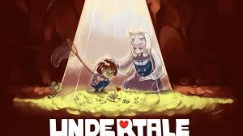

Long ago, Mankind lived alongside another sentient species, Monsters, being's who, while looking different and odd, didn't have any animosity with us, but sometimes, that doesn't matter, Monsters held a power to manipulate the soul, and should they absorb one, they'd become a veritable god, so, fearing their potential, war broke out, and the monsters were sealed Underground by a barrier that could only be broken by the power of 7 human souls, King Asgore has already claimed 6, and a new human has just fallen down.
Released in 2015 and created by Toby Fox, Undertale is a massive Indie RPG following you as you progress through the various places of the Underground, like Snowdin, Waterfall and Hotland, encountering plenty of different monsters, and either fighting or sparing them.
There's plenty to experience with this game, multiple fun and goofy characters like the Skelebros Sans and Papyrus, every object has a few different lines of dialogue to explore and see for yourself, and best of all, a lot of your choices actually matter, with a lot of different ending variants that change based on what you've done, who was or wasn't spared, who you decided to befriend, even what items you did or didn't use.
And the overall story is enjoyable, funny and heartfelt... unless you pick a... certain path to go down, but regardless, the games still very enjoyable, especially with it's bullet hell styled combat system, constantly forcing you to weave around plenty of different attacks, it's lot of fun to go through.